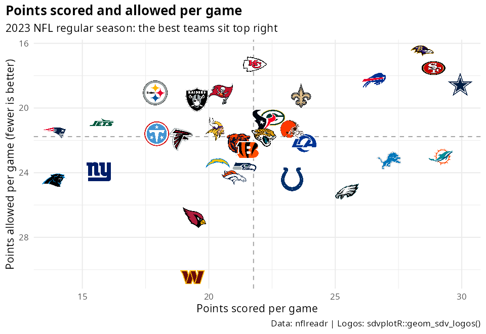

sdvplotR plots sports team logos, wordmarks, player headshots and team colors across the 28 leagues of the SportsDataverse team index (sdv_leagues()) — NFL, NBA, WNBA, MLB, NHL, college football, men’s and women’s college basketball, soccer and more — in ggplot2 plots, gt tables and reactable tables, and in interactive plotly, ggiraph and leaflet charts and maps, with playing surfaces (59 of them: every court, field, rink and sheet, lacrosse, tennis, volleyball and curling included; the team leagues’ surfaces take a team’s colors) from sportyR. It is built on ggpath and unifies the approach established by nflplotR, cfbplotR, nbaplotR and mlbplotR behind one league argument.

Part of the SportsDataverse family of R packages for sports analytics.
Data freshness and pipeline status for every SportsDataverse dataset: sportsdataverse.org/status.
Installation
Once on CRAN, install the released version with:
install.packages("sdvplotR")Install the development version of sdvplotR from GitHub with:
# using the pak package (recommended):
if (!requireNamespace("pak", quietly = TRUE)) {
install.packages("pak")
}
pak::pak("sportsdataverse/sdvplotR")
# or from R-universe (binary builds):
install.packages("sdvplotR", repos = c("https://sportsdataverse.r-universe.dev", "https://cloud.r-project.org"))Python
The same team colors, logos, wordmarks and headshots are on PyPI as sdvplot (Python 3.10+), with adapters for matplotlib and seaborn, plotnine, Plotly, Altair, Bokeh, HoloViews, great_tables and folium. sdvplot.great_tables ports this package’s table themes, cell styling, legends and image export. Docs: sdvplot.sportsdataverse.org. Source: sportsdataverse/sdvplot.
JavaScript / TypeScript
They are also on npm as @sportsdataverse/sdvplot, with Observable Plot, D3, React and chart-library integrations plus shot charts. @sportsdataverse/sdvtables is the counterpart to the gt table helpers. Docs: plot.sportsdataverse.org. Source: sportsdataverse/sdvplot-js.
Usage
Every function takes a league argument ("nfl", "nba", "wnba", "mlb", "nhl", "cfb", "mbb", "wbb", "soccer" and the rest of sdv_leagues()). Team identifiers are resolved automatically: full names, abbreviations from other data providers (ESPN, nflverse, MLB Stats, nba_api, NHL, CFBD, NCAA and more) and the codes of relocated franchises all resolve to the same team. sdv_resolve() shows the id a value resolves to, sdv_suggest() proposes candidates for a typo, and season selects the era for codes that were reused.
library(sdvplotR)
library(ggplot2)
# NFL team logos in a grid
df <- data.frame(
a = rep(1:8, 4),
b = sort(rep(1:4, 8), decreasing = TRUE),
teams = sdv_teams("nfl")$abbr
)
ggplot(df, aes(x = a, y = b)) +
geom_sdv_logos(aes(team = teams), league = "nfl", width = 0.075) +
theme_void()
# Logos as axis labels + team colours as fill
df2 <- data.frame(
team = c("KC", "BUF", "SF", "DAL"),
score = c(42, 38, 35, 30)
)
ggplot(df2, aes(x = team, y = score)) +
geom_col(aes(fill = team), show.legend = FALSE) +
scale_fill_sdv(league = "nfl") +
theme_minimal() +
theme(axis.text.x = element_sdv_logo(league = "nfl", size = 1))
library(gt)
# Logos inside a gt table, in the SportsDataverse table theme
data.frame(team = c("KC", "BUF", "SF"), wins = c(13, 12, 11)) |>
gt() |>
gt_sdv_logos(columns = "team", league = "nfl") |>
gt_theme_sdv()
# ...or dressed in one team's colors
data.frame(player = c("Patrick Mahomes", "Travis Kelce"), yards = c(4183, 984)) |>
gt() |>
gt_theme_sdv_team(team = "KC", league = "nfl")
library(reactable)
# Logos inside a reactable table with team-coloured bars
df3 <- data.frame(team = c("KC", "BUF", "SF"), wins = c(13, 12, 11))
reactable(
df3,
columns = list(
team = colDef(cell = reactable_sdv_logos(league = "nfl"), html = TRUE),
wins = colDef(style = reactable_sdv_team_color_bar(df3, "team", league = "nfl"))
)
)
# Interactive: the logo grid again, each logo with a tooltip (ggiraph) ...
p <- ggplot(df, aes(x = a, y = b)) +
geom_sdv_logos_interactive(aes(team = teams, tooltip = teams, data_id = teams),
league = "nfl", width = 0.075
) +
theme_void()
ggiraph::girafe(ggobj = p)
# ... or logos on a native plotly chart (addSdvLogoMarkers() does maps)
plotly::plot_ly(df, x = ~a, y = ~b, type = "scatter", mode = "markers", text = ~teams) |>
add_sdv_logos(df$a, df$b, df$teams, league = "nfl")
# A playing surface painted in a team's colors, ready for shot or play data
sdv_surface("nba", team = "BOS")
# ... or any of 59 surfaces, lacrosse to curling: see the Surfaces cookbook
sdv_surface("nll")The Interactive Charts cookbook covers geom_sdv_logos_interactive() and its wordmark and headshot siblings, add_sdv_logos(), sdv_axis_logos() and sdv_colorway() for plotly, and addSdvLogoMarkers() for leaflet.
gt_theme_sdv() (light or style = "dark") and gt_theme_sdv_team() are the SportsDataverse table themes. The gt side also carries the gtUtils toolkit by Andrew Weatherman: 18 table themes (gt_theme_kenpom(), gt_theme_savant(), gt_theme_athletic(), …), color legends, cut lines, significance notation, outlier flags, faceted grids and gt_save_crop() / gt_social_crop() for publishing.
Dark-mode logo variants are available through variant = "dark" in the table helpers, and sdv_teams() exposes the full reference data (ESPN ids, colors, conference) for every team.
Documentation
The sdvplotR documentation website has the full function reference and these articles:
🖼️ Browse the gallery: every article by its picture, each linking to the article that draws it.
Per-sport (each with companion SportsDataverse package examples): NFL · CFB · NBA · WNBA · MLB · NHL · MBB · WBB
Cookbooks: Getting Started · Social Posting · Leaderboard Dashboards · reactable Integration · Workflows · Logos in ggplot2 · Colors and Themes · Interactive: plotly, ggiraph, leaflet · Surfaces and Shot Charts
Interactive (ggiraph, plotly and leaflet; every per-sport and leaderboard article also ends with an interactive version): NFL EPA Scatter · NBA Net Rating · NHL Shot Map · MLB Run Differential · CFB Stadium Map
Cheat sheet
A printable four-page reference for sdvplotR: team logos, colors and scales in ggplot2, team identity, the plotly, ggiraph and leaflet integrations, surfaces, and the gt and reactable toolkits, in four color themes, light and dark.
📄 Download the sdvplotR cheat sheet (PDF)
Browse the other SportsDataverse cheat sheets at sportsdataverse.org/cheatsheets.
The SportsDataverse
sdvplotR draws the pictures; the companion packages fetch the data.
| Package | Sport / Scope |
|---|---|
| cfbfastR | College football |
| hoopR | Men’s basketball (NBA and NCAA) |
| wehoop | Women’s basketball (WNBA and NCAA) |
| fastRhockey | Hockey (NHL and PWHL) |
| baseballr | Baseball (MLB, MiLB, NCAA) |
| nflfastR · nflreadr | NFL play-by-play and data loaders |
| oddsapiR | Sports betting odds |
| cfbseedR | CFB seeding and playoff simulation |
| sportyR | Playing-surface plots |
| sportsdataverse-R | Umbrella R metapackage |
| sdvplot | Python plots and tables |
| @sportsdataverse/sdvplot · @sportsdataverse/sdvtables | JavaScript / TypeScript plots and tables |
| sportsdataverse-py · sportsdataverse.js | Python and Node.js |
See the full ecosystem at sportsdataverse.org.


Code of Conduct
Please note that the sdvplotR project is released with a Contributor Code of Conduct. By contributing to this project, you agree to abide by its terms.